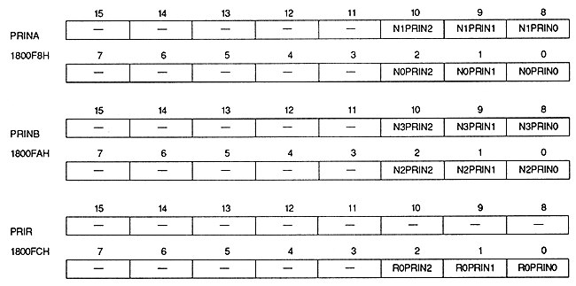

Table 11.1 Priorities when priority numbers are equal
| Priority | Normal | Enter external screen data When | Rotary scroll screen to display two screens | Rotary scroll screen External screen with two screens Enter |
| High ↑ │ │ │ │ │ │ │ │ ↓ Low | Sprite | Sprite | Sprite | Sprite |
| RBG0 | RBG0 | RBG0 | RBG0 | |
| NBG0 | NBG0 | RBG1 | RBG1 | |
| NBG1 | EXBG | - | EXBG | |
| NBG2 | NBG2 | - | - | |
| NBG3 | NBG3 | - | - |
